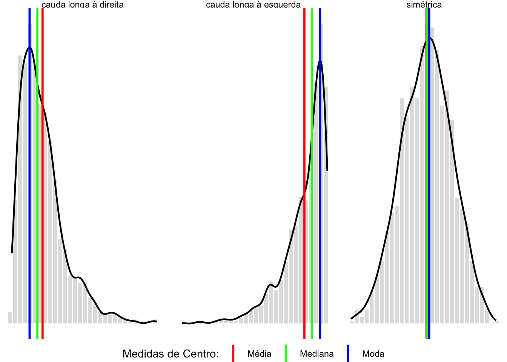
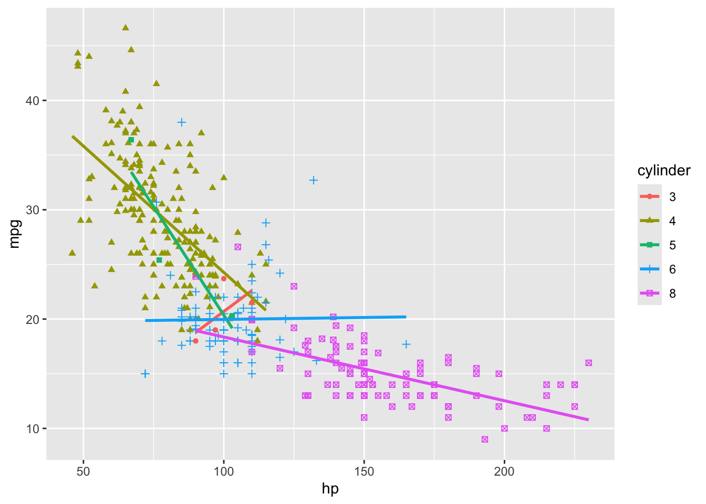

| mpg | cylinder | displacement | hp | weight | acceleration | modelyear | origin | carname |
|---|---|---|---|---|---|---|---|---|
| 18 | 8 | 307 | 130 | 3504 | 12.0 | 70 | 1 | chevrolet chevelle malibu |
| 15 | 8 | 350 | 165 | 3693 | 11.5 | 70 | 1 | buick skylark 320 |
| 18 | 8 | 318 | 150 | 3436 | 11.0 | 70 | 1 | plymouth satellite |
| 16 | 8 | 304 | 150 | 3433 | 12.0 | 70 | 1 | amc rebel sst |
| 17 | 8 | 302 | 140 | 3449 | 10.5 | 70 | 1 | ford torino |
| 15 | 8 | 429 | 198 | 4341 | 10.0 | 70 | 1 | ford galaxie 500 |
| 14 | 8 | 454 | 220 | 4354 | 9.0 | 70 | 1 | chevrolet impala |
| 14 | 8 | 440 | 215 | 4312 | 8.5 | 70 | 1 | plymouth fury iii |
| 14 | 8 | 455 | 225 | 4425 | 10.0 | 70 | 1 | pontiac catalina |
| 15 | 8 | 390 | 190 | 3850 | 8.5 | 70 | 1 | amc ambassador dpl |
| 15 | 8 | 383 | 170 | 3563 | 10.0 | 70 | 1 | dodge challenger se |
| 14 | 8 | 340 | 160 | 3609 | 8.0 | 70 | 1 | plymouth ’cuda 340 |
| 15 | 8 | 400 | 150 | 3761 | 9.5 | 70 | 1 | chevrolet monte carlo |
| 14 | 8 | 455 | 225 | 3086 | 10.0 | 70 | 1 | buick estate wagon (sw) |
| 24 | 4 | 113 | 95 | 2372 | 15.0 | 70 | 3 | toyota corona mark ii |
| 22 | 6 | 198 | 95 | 2833 | 15.5 | 70 | 1 | plymouth duster |
| 18 | 6 | 199 | 97 | 2774 | 15.5 | 70 | 1 | amc hornet |
| 21 | 6 | 200 | 85 | 2587 | 16.0 | 70 | 1 | ford maverick |
| 27 | 4 | 97 | 88 | 2130 | 14.5 | 70 | 3 | datsun pl510 |
| 26 | 4 | 97 | 46 | 1835 | 20.5 | 70 | 2 | volkswagen 1131 deluxe sedan |
| 25 | 4 | 110 | 87 | 2672 | 17.5 | 70 | 2 | peugeot 504 |
| 24 | 4 | 107 | 90 | 2430 | 14.5 | 70 | 2 | audi 100 ls |
| 25 | 4 | 104 | 95 | 2375 | 17.5 | 70 | 2 | saab 99e |
| 26 | 4 | 121 | 113 | 2234 | 12.5 | 70 | 2 | bmw 2002 |
| 21 | 6 | 199 | 90 | 2648 | 15.0 | 70 | 1 | amc gremlin |
MB-751: Estatística Básica
AULA 01
Introdução ao Raciocínio Estatístico e à Análise de Dados
Estatística e o Raciocínio Científico
Engenheiros e cientistas contribuem para o avanço da humanidade de diferentes maneiras. Enquanto cientistas se dedicam a investigar fenômenos para gerar, aprimorar e sistematizar conhecimentos a fim de ampliar nossa compreensão do mundo, engenheiros aplicam esse conhecimento na solução de desafios práticos enfrentados pela sociedade. Embora desempenhem funções diferentes, ambos se apoiam em conjunto estruturado de práticas que garantem o rigor de suas investigações, constituindo o que conhecemos como método científico.
O método científico é um processo lógico e sistemático que orienta a investigação de fenômenos, a construção de conhecimento e a formulação de soluções para problemas complexos. Esse processo iterativo e não linear envolve a observação rigorosa de um fenômeno, a formulação de perguntas científicas, a proposição de hipóteses e sua avaliação por meio de experimentação sistemática e análise de dados. O método científico tem como objetivo chegar a conclusões objetivas e válidas e, para isso, emprega uma combinação de raciocínios dedutivos e indutivos. Embora sua aplicação possa variar conforme o contexto, geralmente segue um conjunto de etapas, descritas a seguir e representadas na Figura 1:
- Observação e formulação da pergunta científica;
- Elaboração de uma hipótese;
- Experimentação, coleta e análise de dados;
- Conclusão; e
- Comunicação dos resultados.
A investigação científica tem início com a observação objetiva e rigorosa de um fenômeno ou conjunto de fatos, seguida pela formulação de uma pergunta científica específica. Com base em conhecimentos prévios, é proposta uma hipótese, isto é, uma conjectura que fornce uma possível resposta ou explicação para a questão levantada.
Para que uma hipótese seja considerada científica, precisa ser testável e refutável, de modo a permitir experimentação ou análise empírica que confirme ou rejeite sua validade. Hipóteses que não atendem a esses critérios não podem ser avaliadas de uma perspectiva científica.
A etapa de experimentação compreende a coleta e análise rigorosa de dados. Com base nas evidências obtidas, avalia-se se a hipótese formulada oferece uma explicação válida para o fenômeno estudado. Caso contrário, a hipótese é revisada, aprimorada ou substituída, reiniciando, assim, o ciclo investigativo.
A comunicação dos resultados é fundamental para garantir que o conhecimento adquirido seja traduzido para aplicações concretas. A revisão por pares assegura a qualidade e validade da pesquisa, ao passo que a replicação dos experimentos por outros pesquisadores reforça a confiabilidade das conclusões e a reprodutibilidade dos achados científicos.
O método científico se apoia em dois tipos principais de raciocínio lógico: dedutivo e indutivo.
O raciocínio dedutivo parte de premissas gerais e teorias já estabelecidas para prever resultados específicos. Por exemplo, se é verdade que “todos os metais conduzem eletricidade” e “o cobre é um metal”, conclui-se que “o cobre conduz eletricidade”. Esta conclusão é uma dedução resultante das premissas consideradas verdadeiras. Estamos realizando uma previsão para a natureza de um metal específico (o cobre) com base no conhecimento que temos sobre todos os metais (declarado nas premissas). No método científico, o racicínio dedutivo é usado para testar hipóteses, por meio da previsão de extraídas de teorias consolidadas.
O raciocínio indutivo, por sua vez, segue o caminho inverso: parte de um conjunto de observações específicas para identificar padrões e formular hipóteses ou generalizações. Por exemplo, se diversos experimentos mostram que determinados compostos químicos reagem sob certas condições, pode-se concluir que tais reações ocorrem de forma sistematica. Essa conclusão corresponde a uma inferência obtida a partir das evidências empíricas. É preciso notar, porém, que não se pode ter certeza absoluta na indução. Mesmo que todas as observações até o momento sustentem a conclusão obtida, novas evidências podem vir a refutá-la. Assim, conclusões obtidas a partir de indução dependem da qualidade e completude dos dados disponíveis e permanecem sujeitas à revisão à luz de novas evidências.
No método científico, esses dois tipos de raciocínio se complementam. O raciocínio dedutivo permite testar previsões derivadas de conhecimentos e teorias existentes, enquanto o raciocínio indutivo contribui para a formulação de novas hipóteses a partir de observações empíricas. Se as evidências suportam a hipótese formulada, reforçam a teoria pressuposta; caso contrário, a teoria precisa ser revisada ou reformulada.
As práticas da Ciência e da Engenharia normalmente envolvem o uso de dados experimentais para compreender fenômenos e validar teorias. Nesse sentido, a Estatística, desempenha um papel fundamental, ao promover rigor, objetividade e eficiência na coleta, análise e interpretação dos dados.
O que é Estatística?
A Estatística é a ciência responsável por estruturar o planejamento de estudos e experimentos, coletar e analisar dados, além de interpretar e apresentar os resultados obtidos. Seu objetivo principal é fornecer ferramentas que auxiliem o processo de tomada de decisão e de descoberta científica, sobretudo em situações que envolvam incerteza e variabilidade.
A análise estatística transforma dados brutos em informações úteis, permitindo identificar padrões, tendências e associações. Essa abordagem é amplamente aplicada em diversas áreas do conhecimento que lidam com desafio de coletar, processar e interpretar de volumes cada vez maiores e mais complexos de dados, sejam eles apresentados na forma de números, textos, imagens, áudio, vídeo, documentos ou outras formas de registro.
Elementos Fundamentais em Estatística
Um conjunto de dados ou massa de dados consiste em uma coleção de valores observados que representam uma ou mais características de objetos, indivíduos ou unidades. Um conjunto de dados pode se referir a uma população completa ou uma amostra dela extraída.
Na terminologia estatística, o conjunto de dados que desejamos analisar representa uma população se corresponde à totalidade das entidades de interesse. A população pode ser finita ou infinita, real ou conceitual.
Uma população finita é composta por um número limitado e enumerável de elementos, ou seja, é possível determinar a quantidade exata de indivíduos que a compõe. Por exemplo, suponha que um engenheiro deseja analisar a qualidade dos componentes eletrônicos de um determinado lote contendo 1000 unidades. Neste caso, a população de interesse é finita e corresponde aos 1000 itens que compõe o lote em questão. Similarmente, se uma companhia aérea deseja planejar a manutenção das 50 aeronaves que possui em sua frota, a população de interesse também é finita e corresponde exatamente a essas 50 aeronaves.
Por outro lado, não é possível enumerar todos os elementos de uma população infinita. Veículos transitando em uma rodovia movimentada ou o conjunto de todos os detritos espaciais na órbita terrestre constituem exemplos de populações que podem ser consideradas infinitas.
Se os elementos da população existem de forma tangível ou concreta, dizemos que esta é uma população real. Por exemplo, o conjunto de todos os passageiros que estão a bordo de uma aeronave comercial neste exato momento constitui uma população real. Por outro lado, uma população conceitual é composta por elementos hipotéticos, inexistentes de forma concreta, mas considerados para fins de planejamento ou modelagem, como as diversas configurações possíveis de um determinado veículo espacial, ou os diferentes cenários futuros imaginados para incidentes aeronáuticos envolvendo veículos autônomos.
Quando se obtém informação sobre todos os elementos da população, tem-se um censo. Porém, devido a limitações de custo, tempo ou outros recursos escassos, nem sempre é viável investigar toda a população. Nestes casos, convém selecionar uma amostra, que corresponde a um subconjunto extraído da população de interesse, com o objetivo de realizar inferências sobre ela.
Para que as conclusões obtidas a partir de uma amostra sejam confiáveis, essa amostra deve ser representativa, preservando as características fundamentais da população de onde foi retirada. Isto requer uma seleção criteriosa dos elementos que a compõe.
A seleção aleatória (aleatorização) é uma estratégia que busca evitar introdução de distorções. A forma mais básica de aleatorização é a amostragem aleatória simples, em que cada indivíduo na população tem a mesma chance de ser selecionado para compor a amostra e não existe relação intencional entre os elementos selecionados.
É importante lembrar que qualquer inferência baseada em dados amostrais está sujeita a incertezas, pois a amostra não é capaz de reproduzir perfeitamente todas as características da população, por mais representativa que seja.
As unidades experimentais (também chamadas unidades amostrais) são os elementos, objetos ou indivíduos que compõe a amostra. As variáveis são as características de interesse registradas para cada unidade. Em um estudo de motores a combustão, por exemplo, podem-se medir variáveis como emissão de gases, consumo de combustível e eficiência para diversas unidades. As informações coletadas para cada unidade formam uma observação, que agrega toda a infromação disponível para aquela unidade. Assim, a observação referente ao i-ésimo motor avaliado consiste no conjunto de valores medidos para este motor para cada uma das variáveis.
As variáveis podem ser classificadas segundo o tipo de informação que expressam. Variáveis categóricas (qualitativas) podem ser separadas em categorias ou classes. Se não há qualquer ordenamento entre as classes, temos uma variável categórica nominal (por exemplo, a marca de um veículo ou a cor dos olhos de uma pessoa). Se as categorias possuem uma ordem implícita, temos uma variável categórica ordinal (como nível de escolaridade: fundamental, médio, superior). Variáveis numéricas (quantitativas) são medidas em escalas numérica com intervalos iguais, podendo ser discretas ou contínuas. Uma variável numérica é discreta se assumir uma quantidade finita ou infinita e enumerável de valores distintos (como o número de transações financeiras realizadas no canal digital de um banco em um dia); e é contínua se puder assumir um número infinito não enumerável de valores (como o valor monetário de uma transação financeira, ou o tempo de reação de um motorista). É importante identificar tipo de variável, pois os procedimentos estatísticos adequados para análise dependem da natureza dos dados.
Um conjunto de variáveis pode representar as características de uma população ou de uma amostra. Assim, é necessário estabelecer a relação entre as quantidades de interesse da população e os valores observados na amostra, distinguindo entre parâmetros e estatísticas. Parâmetros são quantidades populacionais, geralmente desconhecidas. Estatísticas são valores calculados com base em uma amostra e usados para estimar os parâmetros populacionais correspondentes. Como a amostra varia conforme a seleção de indivíduos que a compõe, os valores das estatísticas também variam, representando as quantidades populacionais correspondentes de forma aproximada.
Fontes de Dados
Os dados podem ser provenientes de fontes primárias (quando sua coleta faz parte da investigação científica) ou de fontes secundárias (quando são extraídos de outras fontes, incluindo relatórios, publicações ou bancos de dados). E geral, a coleta primária pode ocorrer por meio de experimentos planejados e estudos observacionais.
Em um estudo experimental, o investigador manipula ativamente uma ou mais variáveis (fatores ou variáveis explicativas) em um ambiente controlado, buscando isolar seu efeito sobre a variável de resposta de todas as outras possíveis fontes de variabilidade que podem afetar a resposta de interesse. Assim, qualquer efeito observado na resposta pode ter causa atribuída à variação dos fatores controlados, permitindo estabelecer relações de causa e efeito. Por exemplo, é possível conduzir um experimento para avaliar se a inclusão de um certo aditivo influencia a resistência de um material. Se o experimento for realizado de forma controlada, eliminando perturbações espúrias, as variações observadas na resistência do material poderão ser atribuídas à presença do aditivo.
Em um estudo observacional, por outro lado, o pesquisador atua apenas como um observador, no fenômeno ou nas variáveis em estudo. Nesse caso, é mais difícil estabelecer relações de causa e efeito, devido à possível presença de variáveis de confusão, que afetam simultaneamente a variável de resposta e as variáveis explicativas, mas não estão sob controle.
Como exemplo, considere um estudo observacional conduzido por uma empresa de transporte aéreo com o objetivo de explicar o consumo de combustível por unidade de carga transportada em suas aeronaves, em função do tipo de aeronave, do fator de carga e da rota percorrida. Variáveis de confusão como condições climáticas, congestionamento do tráfego aéreo e outros fatores específicos relacionados aos aeroportos, podem influenciar tanto o consumo de combustível quanto as variáveis explicativas. Condições climáticas, tais como velocidade e direção do vento ou turbulência, podem afetar o consumo de combustível da aeronave, assim como o congestionamento do tráfego aéreo, que pode levar a mudanças de rota ou aumento no tempo de taxiamento. Se tais fatores não forem considerados, o estudo pode levar a conclusões equivocadas sobre o efeito do tipo de aeronave, do fator de carga e da rota percorrida no consumo de combustível.
Tipos de Problemas de Análise de Dados
A Estatística lida com duas classes de problemas: descritivos e inferenciais.
Em problemas descritivos, o principal objetivo é organizar, resumir e descrever as principais características de um conjunto de dados, seja ele uma amostra ou uma população. Para isso, utilizam-se técnicas de visualização e resumos estatísticos, que facilitem a compreensão dos dados. No entanto, é importante ressaltar que as conclusões obtidas a partir deste tipo de análise referem-se exclusivamente ao conjunto de dados analisado e não podem ser extrapoladas para além dele.
Já em problemas inferenciais, busca-se generalizar as conclusões obtidas em uma amostra para toda a população. Neste caso, o propósito é realizar generalizações que sejam válidas para além dos dados observados, seja estimando parâmetros ou tesntando hipóteses sob condições de incerteza. Como cada amostra representa apenas parte da população, as inferências são inevitavelmente incertas, sendo fundamental quantificar esse grau de incerteza.
Por exemplo, suponha que um engenheiro, ao avaliar um conjunto de 100 dispositivos defeituosos, observe que 7% das falhas foram causadas por exposição à radiação. Ele poderia tentar inferir se esse índice é válido para toda a linha de produção, isto é, ele pode afirmar que esta proporção reflete exatamente a realidade para todos os dispositivos deste tipo? Certamente não. Uma outra amostra de 100 dispositivos poderia apresentar 8% de falhas causadas por radiação, enquanto uma terceira poderia indicar em 4%. Avaliar e quantificar essa incerteza faz parte do processo de inferência, e é possível com o emprego de métodos probabilísticos.
Probabilidade, Inferência e Dedução
O método científico, ao empregar experimentos para obter dados, encontra na Teoria de Probabilidades a base para lidar com a incertezas associadas. Em linguagem estatística, cada população é descrita por um modelo probabilístico, determinado por um conjunto de parâmetros fixos, mas desconhecidos. As estatísticas obtidas a partir de amostras variam de acordo com o processo de amostragem e, por meio de inferências, são utilizadas para extrair conclusões sobre a distribuição populacional.
Como mostramos, a incerteza é inerente a todo processo de amostragem. A Teoria de Probabilidades permite descrever essa incerteza de forma quantitativa, fornecendo ferramentas para avaliar o quanto podemos confiar nas conclusões obtidas a partir de amostras finitas ou imperfeitas.
A Figura 2, abaixo, ilustra o papel do raciocínio dedutivo na construção de modelos probabilísticos e do raciocínio indutivo na inferência estatística, evidenciando a troca de informações entre população e amostra.
Dominar conceitos de Probabilidade e Estatística permitirá compreender melhor as limitações dos modelos, interpretar resultados de modo crítico e comunicar descobertas de maneira clara e fundamentada.
Independentemente de se tratar de um problema descritivo ou inferencial, um passo inicial essencial envolve organizar e resumir os dados. Técnicas de análise exploratória podem trazer à tona padrões, tendências e destacar aspectos relevantes do problema, servindo de base para interpretações consistentes e para a comunicação dos resultados de forma efetiva.
Métodos para Exploração, Resumo e Descrição de Dados
A Análise Exploratória de Dados (EDA, do inglês Exploratory Data Analysis) tem como principal objetivo proporcionar uma melhor compreensão dos dados disponíveis. Esse processo envolve a investigação de diversos aspectos do conjunto de dados, incluindo:
identificar as variáveis presentes, o número de observações, o formato dos dados e outras características relevantes da massa de dados;
examinar a dispersão, a forma e possíveis padrões na distribuição dos dados;
verificar a existência de possíveis associações ou padrões de dependência entre diferentes variáveis.
Esta análise exploratória deve ser conduzida com três propósitos fundamentais:
Diagnóstico dos dados: identificar possíveis problemas, como medidas inconsistentes, diferenças de escala ou ordens de grandeza incompatíveis, amplitude inadequada de valores, dados faltantes ou erros de registro.
Avaliação da viabilidade da investigação: verificar se os dados disponíveis são adequados e suficientes para responder à questão científica sendo investigada ou se há necessidade de obter informações adicionais. Nessa etapa deve considerar também a possibilidade de explorar outras questões a partir da base de dados existente.
Obtenção de insights preliminares: identificar padrões e tendências iniciais nos dados, possibilitando a formulação de hipóteses que serão testadas posteriormente com métodos inferenciais.
Se o conjunto de dados representa uma população, as ferramentas exploratórias são úteis para descrever e resumir suas principais características. No entanto, na maioria das vezes os dados correspondem a uma amostra, de forma que a exploração pode servir para orientar o processo de inferência estatística, auxiliando na formulação de hipóteses e na identificação de padrões iniciais.
É importante destacar que a exploração dos dados não deve ser utilizada para realizar inferências ou previsões. Como esse processo não conta com a formalidade e o rigor estatístico necessários, suas conclusões devem ser tratadas como indicativas, e não como afirmações científicas conclusivas.
Neste texto, consideraremos apenas dados estruturados, ou seja, aqueles que podem ser organizados tabelas. No entanto, mesmo quando os dados são tabulados, extrair informações relevantes pode ser uma tarefa desafiadora, especialmente à medida que o volume de obervações aumenta. Esse ponto será ilustrado no exemplo a seguir.
Exemplo 1 (Consumo de combustível de automóveis) Utilizaremos o conjunto de dados AutoMPG para ilustrar a aplicação de aguns métodos para exploração, resumo e descrição de dados. Os dados foram exxtraídos do UCI Machine Learning Repository, um repositório que disponibiliza uma grande variedade de conjuntos de dados para diversos tipos de análise.
O objetivo original do estudo era prever o consumo de combustível de automóveis em ambiente urbano expresso em milhas por galão (mpg), com base em determinadas características dos veículos.
Informações Preliminares
O conjunto de dados contém um total de 398 observações registradas para 9 variáveis de interesse, incluindo a resposta mpg:
Variáveis:
mpg: numérica (contínua)
cylinder: categórica (ordinal)
displacement: numérica (contínua)
hp: numérica (contínua)
weight: numérica (contínua)
acceleration: numérica (contínua)
modelyear: numérica (discreta)
origin: categórica (nominal)
carname: categórica (nominal)
Entre essas variáveis, algumas são categóricas e outras, numéricas. Algumas observações foram removidas do conjunto original por ausência de registro na variável de resposta mpg. Além disso, verificou-se que há 6 valores faltantes para a potência do motor, indicada pela variável hp. Após excluir as observações incompletas, o conjunto final contém um total de 392 observações completas.
A tabela abaixo apresenta as 25 primeiras observações do conjunto de dados:
Embora esse conjunto de dados contenha uma quantidade considerável de informações, sua interpretação pode ser difícil quando analisado em sua forma bruta, mesmo considerando as 25 primeiras observações da tabela, que reprentem apenas uma pequena amostra do total disponível. Para facilitar a extração de informações relevantes, é essencial resumir e visualizar certos aspectos dos dados, o que permite responder a perguntas como:
- Qual a proporção dos automóveis produzidos em cada região de origem?
- Como está distribuído o número de cilindros entre os veículos?
- Existe relação entre o consumo de combustível (
mpg) e a aceleração (acceleration)? - Qual a associação entre a potência do motor (
hp) e a aceleração (acceleration)?
A seguir, exploraremos algumas ferramentas de análise exploratória de dados que tornarão possível obter insights preliminares e direcionar investigações mais profundas que permitam responder a essas perguntas de maneira mais rigorosa.
Resumos Exploratórios
Para obter uma melhor compreensão dos dados disponíveis e orientar as análises subsequentes, podemos construir resumos exploratórios numéricos ou gráficos. A escolha dos procedimentos mais adequados depende da natureza das variáveis analisadas, ou seja, se são categóricas ou numéricas.
Resumos numéricos correspondem a estatísticas calculadas a partir do conjunto de dados e fornecem informações quantitativas sobre suas principais características. Resumos gráficos permitem visualizar padrões e tendências de maneira intuitiva, podendo tornar mais evidente a estrutura dos dados.
Resumos Unidimensionais
Resumos unidimensionais consideram cada variável separadamente. Eles são úteis para compreender a estrutura dos dados, permitindo detectar padrões, identificar valores extremos e vislumbrar a distribuição das variáveis.
Algumas das ferramentas gráficas mais utilizadas para obter informação a respeito da distribuição de variáveis incluem histogramas, gráficos de densidade estimada ou boxplots, no caso de variáveis quantitativas e tabelas de frequência e barplots, no caso de variáveis qualitativas.
Variáveis Quantitativas
A distribuição dos valores observados para uma variável quantitativa pode ser representada por um histograma, gerado no R com o comando geom_histogram(). O histograma é útil para descrever uma distribuição, mas sua forma depende da discretização, determinada pelo número de divisões (bins) e da localização de suas fronteiras. Poucas caixas tornam o histograma pouco informativo; por outro lado, uma quantidade excessiva de caixas torna o histograma ruidoso, destacando variações irrelevantes.
Uma alternativa ao histograma é a curva de densidade estimada, obtida no R com o comando geom_density(). Ela representa uma versão suavizada da distribuição, sendo contínua e pode produzir uma visualização mais eficaz do comportamento dos dados.
A localização de cada observação pode ser adicionada ao histograma, criando um diagrama de dispersão unidimensional, com o comando geom_rug().
ggplot(auto, aes(x = acceleration)) +
geom_histogram(aes(y = after_stat(density)), bins = 5) +
geom_density(lwd = 0.5, colour = 4, fill = 4, alpha = 0.25, adjust = 2.5) +
geom_rug(alpha = 0.5) +
labs(x = "aceleração", y = "densidade")
ggplot(auto, aes(x = acceleration)) +
geom_histogram(aes(y = after_stat(density)), bins = 15) +
geom_density(lwd = 0.5, colour = 4, fill = 4, alpha = 0.25, adjust = 2.5) +
geom_rug(alpha = 0.5) +
labs(x = "aceleração", y = "densidade")
ggplot(auto, aes(x = acceleration)) +
geom_histogram(aes(y = after_stat(density)), bins = 50) +
geom_density(lwd = 0.5, colour = 4, fill = 4, alpha = 0.25, adjust = 2.5) +
geom_rug(alpha = 0.5) +
labs(x = "aceleração", y = "densidade")acceleration para diferentes números de caixas.
Variáveis Qualitativas
Para variáveis categóricas, o barplot é uma ferramenta gráficas útil para visualizar a distribuição das frequências entre as diferentes classes que uma variável categórica pode assumir. Ela é especialmente útil no caso de mais de duas classes.
# Barplot para `cylinder`
auto %>%
count(cylinder) %>%
ggplot(aes(x = cylinder, y = n, fill = cylinder)) +
geom_bar(stat = "identity") +
labs(x = "Número de cilindros", y = "Frequência")cylinder.
Observamos que há um desbalanceamento na distribuição do número de cilindros entre os veículos. Dependendo do uso que se fará dos dados, pode ser necessário considerar estratégias para equilibrar o número de observações por categoria.
Embora gráficos de setores (também conhecidos como gráficos de pizza) sejam extremamente populares, não é recomendável utilizá-los para representar frequências de variáveis categóricas. A comparação de áreas em um gráfico de setores é menos intuitiva do que a comparação de alturas em um barplot, especialmente quando há um grande número as categorias, quando suas proporções são semelhantes, ou quando ocorrem em frequências muito baixas.
Medidas de Localização ou Tendência Central
As medidas de tendência central servem para identificar um valor que represente de maneira resumida o conjunto de dados, permitindo localizar onde os valores de uma variável quantitativa costumam se concentrar. As três principais medidas de tendência central são média, mediana e moda.
- Média (\(\bar{X}\) ou \(\mu\))
A média aritmética, ou simplesmente média, representa o centro de massa ou ponto de equilíbrio da distribuição. Esta é a medida de localização mais frequentemente utilizada, mas é muito sensível a assimetrias na distribuição e pode ser bastante influenciada por valores extremos. Tipicamente, o símbolo \(\bar{X}\) é utilizado para representar a média amostral de um conjunto de valores \(X_1, X_2, \ldots, X_n\), enquanto a média populacional é representada pela letra grega \(\mu\).
\[\begin{align*} \bar{X} = \frac{1}{n}\sum_{i=1}^{n}X_i \end{align*}\]
- Mediana (\(m\) ou \(\tau\))
A mediana de um conjunto de valores ordenados em ordem crescente \(X_{(1)}, X_{(2)}, \ldots, X_{(n)}\) é o valor que divide os valores observados em duas metades, ou seja, 50% das observações apresentam valor inferior à mediana e 50% das observações apresentam valor superior à mediana. Essa é uma medida de centro resistente a assimetrias e valores extremos, pois cada observação apresenta o mesmo peso na determinação da mediana. Por este motivo, esta é uma estatística chamada robusta. A mediana amostral é representada por \(m\) e a mediana populacional é representada pela letra grega \(\tau\).
\[\begin{align*} m = \left\{ \begin{array}{ll} X_{[(n+1)/2]} & \mbox{se $n$ é ímpar};\\ \frac{1}{2}\left[X_{(n/2)} + X_{(n/2 + 1)} \right] & \mbox{se $n$ é par}. \end{array} \right. \end{align*}\]
- Moda
A moda é uma medida bem menos utilizada que as outras duas e representa o valor mais frequente no conjunto de dados. Ela pode ser útil em situações em que a frequência relativa de ocorrências é importante.
A Figura 5 ilustra distribuições de diferentes formatos, indicando as medidas de localização em cada caso. Veja que a média deriva na direção da cauda, para as distribuições assimétricas. Para uma distribuição com cauda longa à direita, a média apresenta valor maior que a mediana (os valores observados elevados, embora pouco frequentes, aumentam o valor da média amostral); por outro lado, para uma distribuição com cauda longa à esquerda, a média apresenta valor menor que a mediana. Para distribuições com assimetria acentuada, a mediana pode fornecer uma representação mais adequada para o “centro” da distribuição. Em todo caso, a medida de localização adequada para um certo conjunto de dados depende exatamente do tipo de informação descritiva que se deseja obter.

No exemplo do consumo de combustível, a distribuição da variável acceleration é aproximadamente simétrica e unimodal (ou seja, apresenta apenas uma moda, ou pico). Por este motivo, os valores de média, mediana e moda são bem próximos.
acceleration <- c(auto$acceleration)
density_estimate <- density(auto$acceleration)
mean_value <- mean(acceleration)
median_value <- median(acceleration)
mode_value <- density_estimate$x[which.max(density_estimate$y)]
ggplot(auto, aes(x = acceleration)) +
geom_histogram(aes(y = after_stat(density)), bins = 15) +
# adiciona linha de densidade estimada (suavização)
geom_density(lwd = 0.5, fill = 4, alpha = 0.25) +
# adiciona dispersão unidimensional de `acceleration`
geom_rug(alpha = 0.5) +
# adiciona "média"
geom_vline(aes(xintercept = mean(acceleration), color = "média"),
lwd = 3, show.legend = TRUE) +
# adiciona "mediana"
geom_vline(aes(xintercept = median(acceleration), color = "mediana"),
lwd = 1.5, show.legend = TRUE) +
# adiciona "moda"
geom_vline(aes(xintercept = mode_value, color = "moda"),
lwd = 1, show.legend = TRUE)acceleration.
Medidas de Dispersão (Variabilidade)
As medidas de dispersão fornecem informação sobre o espalhamento dos valores em um conjunto de dados, permitindo avaliar quão próximos ou afastados os valores estão do centro da distribuição. Elas indicam a heterogeneidade das observações e permitem perceber se os dados apresentam alta variabilidade, ou espalhamento, ou se estão mais concentrados em torno de um valor central. As medidas de dispersão mais comumente utilizadas são variância, desvio-padrão e amplitude.
- Variância (\(S^2\) ou \(\sigma^2\))
A variância corresponde à distância média quadrática das observações com relação à média. A variância amostral \(S^2\) de um conjunto de valores \(X_1, X_2, \ldots, X_n\), é definida como
\[\begin{align*} S^2 = \frac{1}{n-1}\sum_{i=1}^n (X_i - \bar{X})^2 \end{align*}\]
A variância populacional para uma população finita de tamanho \(n\), \(\sigma^2\), é definida como
\[\begin{align*} \sigma^2 = \frac{1}{n}\sum_{i=1}^n (X_i - \mu)^2 \end{align*}\]
- Desvio-padrão (\(s\) ou \(\sigma\))
O desvio-padrão corresponde à raiz quadrada da variância e indica a dispersão média em torno da média. Para uma amostra, temos:
\[\begin{align*} s = \sqrt{S^2} = \sqrt{\frac{1}{n-1}\sum_{i=1}^n (X_i - \bar{X})^2} \end{align*}\]
O desvio-padrão populacional é simplesmente \(\sigma = \sqrt{\sigma^2}\).
- Amplitude (\(A\))
A amplitude é a diferença entre o máximo e o mínimo valor observado para os dados. Esta é uma medida de dispersão robusta, pois diferentes conjuntos de dados podem apresentar diferentes comportamentos com relação à sua variabilidade, com uma mesma amplitude. Em geral, a amplitude é útil como medida de dispersão no caso de amostras pequenas, com poucas observações.
\[\begin{align*} A = X_{max} - X_{min} \end{align*}\]
Medidas de Posição Relativa
As medidas de posição relativa descrevem onde uma determinada observação se situa em relação às demais quando os dados são ordenados em ordem crescente. Essas estatísticas são especialmente úteis para avaliar se um valor específico está abaixo ou acima de uma fração significativa da amostra, além de indicar quão longe um valor se encontra da média.
- Quartis/percentis/quantis
Os quartis são as posições que dividem a massa de dados em quartos. Sendo assim, 1/4 (ou 25%) das observações se encontram abaixo do 1o quartil (também chamado quartil inferior ou Q1) e 1/4 (ou 25%) das observações se encontram acima do 3o. quartil (o quartil superior, também chamado de Q3). A mediana corresponde ao 2o quartil (Q2) e a diferença entre o 3o e o 1o quartil é chamada amplitude interquartil (IQR, interquartile range). O primeiro quartil é também chamado de percentil 25% ou quantil 0,25.
- Escores-z
Os escores-z medem a posição das observações com relação a média, em números de desvios-padrão. Valores negativos para o escore-z indicam que a observação correspondente encontra-se abaixo da média. Valores positivos, indicam que a observação se encontra acima da média. Quanto maior o valor do escore-z em módulo, mais distante da média se encontra a observação.
\[\begin{align*} z_i = \frac{X_i - \bar{X}}{S} \end{align*}\]
Pela Regra Empírica, para distribuições simétricas e unimodais, a maior parte das observações em um conjunto de dados deve se encontrar a uma distância de dois desvios-padrão da média (isto é, os escores-z serão menores que 2, em valor absoluto) e quase a totalidade das observações deve estar a uma distância de 3 desvios-padrão da média (ou seja, terão escores-z inferiores a 3, em valor absoluto).
Observações Extremas (Outliers)
Por vezes, observações inconsistentes estão presentes da massa de dados. Essa inconsistência pode se manifestar através de um valor de observação atipicamente grande ou pequeno, relativamente às demais observações no conjunto de dados. Tais observações são chamadas outliers, pontos extremos ou observações extremas.
Outliers normalmente podem ter uma das possíveis causas:
- A observação pode ter sido incorretamente medida ou registrada ;
- A observação pode pertencer a uma população distinta; ou
- A observação é correta, mas representa um evento raro.
O método mais comum de detecção de outliers é o cálculo do escore-z. São considerados outliers observações com valores absolutos de escore-z maiores que 3. Outro procedimento é baseado na ferramenta gráfica chamada boxplot, que fornece um resumo da distribuição dos valores da variável sendo analisada.
O boxplot nos dá 5 estatísticas robustas e também mostra possíveis outliers. A caixa é delimitada pelos quartis inferior (Q1) e superior (Q3) e a linha no seu centro corresponde à mediana (Q2). Portanto, 50% das observações se encontram entre os valores que determinam as extremidades da caixa. O comprimento da caixa corresponde à amplitude inter-quartis (ou IQR).
As linhas horizontais que se afastam da caixa são chamadas “whiskers”, cujo comprimento é tal que a distância máxima entre as duas extremidades vale \(4 \times\)IQR. Qualquer valor além dos “whiskers” é marcado como um ponto extremo, ou outlier.

O código a seguir pode ser utilizado para produzir o boxplot para a variável acceleration:
ggplot(auto, aes(x = acceleration, y = "")) +
# adiciona boxplot
geom_boxplot () +
# adiciona rótulo aos eixos
labs(y = "", x = "acceleration")acceleration.
Resumos numéricos unidimensionais podem ser obtidos no R utilizando a função summary. Para as variáveis categóricas, a função summary retorna o número de observações em cada classe. Para as variáveis quantitativas, a função summary fornece 6 números importantes: valores mínimo, máximo, 1o. e 3o. quartis, mediana e média. Veja o resumo numérico para as variáveis da massa de dados auto:
# resumo numérico
summary(auto) mpg cylinder displacement hp weight
Min. : 9.00 3: 4 Min. : 68.0 Min. : 46.0 Min. :1613
1st Qu.:17.00 4:199 1st Qu.:105.0 1st Qu.: 75.0 1st Qu.:2225
Median :22.75 5: 3 Median :151.0 Median : 93.5 Median :2804
Mean :23.45 6: 83 Mean :194.4 Mean :104.5 Mean :2978
3rd Qu.:29.00 8:103 3rd Qu.:275.8 3rd Qu.:126.0 3rd Qu.:3615
Max. :46.60 Max. :455.0 Max. :230.0 Max. :5140
acceleration modelyear origin carname
Min. : 8.00 Min. :70.00 1:245 Length:392
1st Qu.:13.78 1st Qu.:73.00 2: 68 Class :character
Median :15.50 Median :76.00 3: 79 Mode :character
Mean :15.54 Mean :75.98
3rd Qu.:17.02 3rd Qu.:79.00
Max. :24.80 Max. :82.00 Resumos Multidimensionais
Ferramentas gráficas podem ser especialmente úteis para comparar distribuições em diferentes grupos ou categorias. Por exemplo, podemos desejar comparar a aceleração de automóveis em função do número de cilindros (cylinder). É possível construir múltiplos boxplots, histogramas ou curvas de densidade estimada para cada categoria, a fim de comparar as distribuições condicionais de uma certa variável. A sobreposição das distribuições facilita a identificação visual de semelhanças e diferenças entre os grupos analisados.
ggplot(auto, aes(x = acceleration, y = origin, fill = origin)) +
geom_boxplot() +
labs(x = "acceleration", y = "origin")No exemplo acima, podemos observar como as distribuições e as medianas da variável acceleration variam dependendo do local de origem do automóvel. Ainda que não seja possível afirmar de imediato a existência de diferença estatisticamente significativa entre os grupos, os padrões identificados podem motivar a formulação de hipóteses que serão testadas posteriormente, de maneira formal.
Alternativamente, podemos comparar as curvas de densidade estimada de acceleration para cada grupo de origem, como abaixo:
ggplot(auto, aes(x = acceleration, fill = origin)) +
geom_density(alpha = 0.5, position = "identity") +
labs(x = "acceleration")Nesse caso, um único gráfico exibe as distribuições de acceleration para automóveis de diferentes origens. A escolha da melhor ferramenta de visualização depende do contexto e do tipo de informação que se deseja destacar.
Relações entre Variáveis
Para avaliar a relação entre pares de variáveis quantitativas, é comum utilizar gráficos de dispersão. No exemplo abaixo, removemos a variável carname, por se tratar de um identificador textual, pouco informativo em termos de relações numéricas.
# Matriz de gráficos de dispersão (base R)
plot(auto[, -9])mpg (biblioteca base R)
library(ggplot2)
library(GGally)
# Matriz de gráficos de dispersão (GGali)
ggpairs(auto[, -9])mpg (biblioteca GGali)
Examinar as relações entre os pares de variáveis pode demandar tempo e esforço, mas fornece informações valiosas, incluindo uma melhor avaliação das relações marginais entre as variáveis. Observamos que pode existir algum tipo de relação estatística entre mpg e cada uma das demais variáveis consideradas. Veja que o diagrama de dispersão para o par mpg, modelyear sugere, por exemplo, que automóveis mais modernos tendem a apresentar valores maiores para mpg do que modelos mais antigos.
Podemos ainda examinar a relação entre duas variáveis, condicionando a uma outra variável categórica. A seguir, comparamos a relação entre mpg e hp, considerando as diferentes categorias de cylinder.
ggplot(auto, aes(x = hp, y = mpg)) +
# adiciona pontos
# (cores e símbolos distintos para diferentes classes da variável `cylinder`)
geom_point(aes(color = cylinder, shape = cylinder)) +
# adiciona retas de tendência
geom_smooth(aes(color = cylinder), method = "lm", se = FALSE)

Nesse gráfico, cada ponto representa um automóvel da base de dados e as cores e os símbolos identificam o número de cilindros. Podemos observar que, para motores de oito cilindros, o aumento de potência (hp) não parece reduzir significativamente o rendimento (mpg). Já para motores com quatro cilindros, há uma queda acentuada no rendimento do automóvel conforme a potência aumenta. Essas diferenças contextuais evidenciam a importância de analisar também as relações condicionais, a fim de enriquecer nossa compreensão dos dados e orientar hipóteses a serem investigadas em estudos futuros.